Higher-Order Network Analysis with Simplicial Complexes
From Transition Networks to Topological Analysis
2026-07-27
Source:vignettes/articles/cograph-tutorial-simplicial.qmd
Introduction
When we analyze sequential data as a network — who follows whom, which state leads to which — we typically build a first-order Markov model: the probability of the next state depends only on the current state. This is the foundation of Transition Network Analysis (TNA).
But human behavior is not always memoryless. Consider two programmers working with an AI coding assistant:
- Programmer A: Specify → Request → Specify → Request (a steady back-and-forth)
- Programmer B: Frustrate → Specify → Request → Command (escalating from frustration to direct commands)
In a first-order model, both sequences contribute equally to the Specify → Request transition. But the context — what came before — matters. The sequence Frustrate → Specify may lead to very different next actions than Request → Specify. These are higher-order dependencies: cases where the past two (or more) states jointly predict the future better than the current state alone.
This tutorial introduces a complete pipeline for detecting, quantifying, and visualizing higher-order structure in sequential data. We progress from standard transition networks through statistical order detection, pathway analysis, and into the topology of higher-order interactions using simplicial complexes.
What you will learn
- Test whether your data has higher-order dependencies (and at what order)
- Identify which specific pathways deviate from first-order expectations
- Detect anomalously frequent or rare behavioral sequences
- Compute topological invariants (Betti numbers, Euler characteristic)
- Track how network topology changes across thresholds (persistent homology)
- Visualize higher-order pathways as simplicial blob diagrams
- Compare higher-order structure across groups
Packages
cograph provides the simplicial visualization (plot_simplicial()). Nestimate provides the higher-order network construction (build_hon, build_hypa, build_mogen) and simplicial complex analysis (build_simplicial, betti_numbers, persistent_homology, q_analysis).
Building the Network
We use a dataset of human–AI pair programming sessions where a researcher coded each human action into 9 behavioral categories: Request, Specify, Command, Correct, Refine, Verify, Inquire, Interrupt, and Frustrate.
data("human_long", package = "Nestimate")
net <- build_network(human_long, method = "relative",
action = "code", actor = "session_id",
time = "timestamp")
netTransition Network (relative probabilities) [directed]
Weights: [0.018, 0.620] | mean: 0.111
Weight matrix:
Command Correct Frustrate Inquire Interrupt Refine Request Specify
Command 0.235 0.088 0.055 0.066 0.035 0.038 0.155 0.280
Correct 0.093 0.091 0.138 0.057 0.054 0.112 0.120 0.278
Frustrate 0.103 0.115 0.176 0.075 0.047 0.171 0.111 0.125
Inquire 0.196 0.126 0.098 0.188 0.094 0.062 0.084 0.106
Interrupt 0.259 0.081 0.094 0.123 0.102 0.080 0.069 0.122
Refine 0.058 0.075 0.072 0.047 0.042 0.086 0.146 0.457
Request 0.096 0.019 0.044 0.067 0.051 0.033 0.039 0.620
Specify 0.263 0.058 0.081 0.072 0.167 0.074 0.070 0.172
Verify 0.224 0.079 0.164 0.118 0.043 0.097 0.116 0.083
Verify
Command 0.048
Correct 0.056
Frustrate 0.077
Inquire 0.044
Interrupt 0.069
Refine 0.018
Request 0.032
Specify 0.043
Verify 0.077
Initial probabilities:
Specify 0.679 ████████████████████████████████████████
Command 0.175 ██████████
Request 0.055 ███
Interrupt 0.030 ██
Correct 0.019 █
Refine 0.019 █
Frustrate 0.013 █
Inquire 0.008
Verify 0.002
splot(net, minimum = 0.05, title = "Human Actions in AI-Assisted Coding")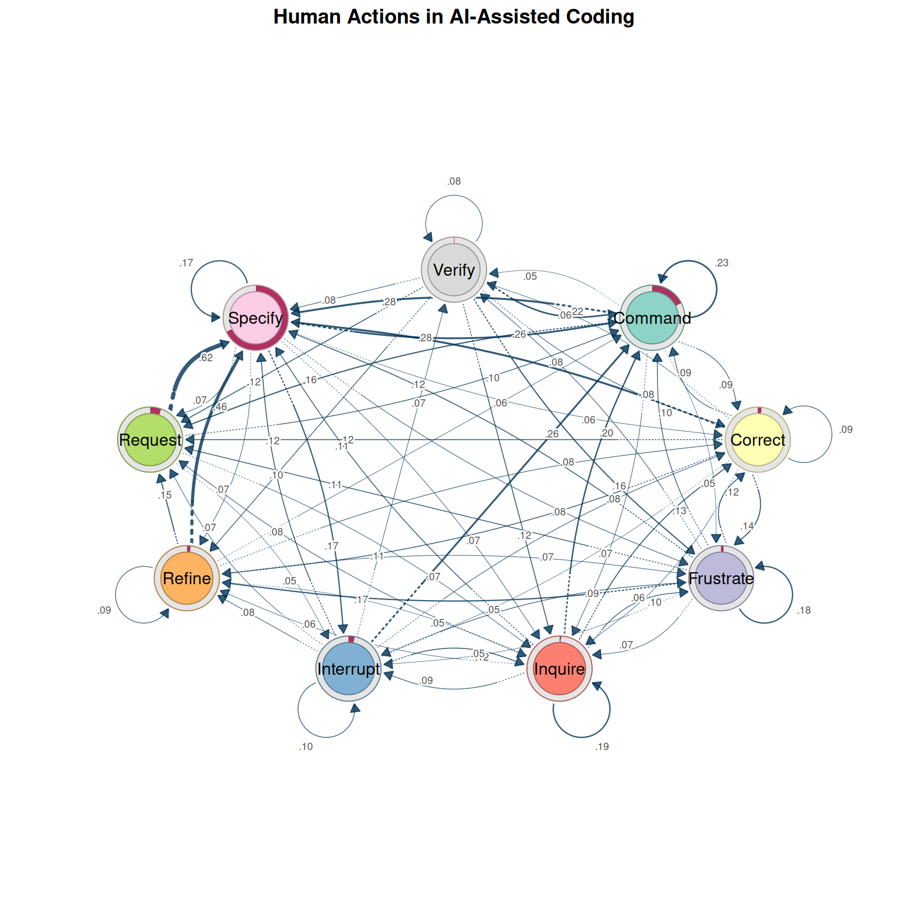
Several patterns stand out: Specify is the hub — most actions lead to and from it. Self-loops on Specify and Command indicate persistence. The Request → Specify → Command backbone reflects the natural workflow. But this first-order view might be hiding important patterns. Does it matter how someone arrived at Specify?
Is First-Order Enough? Multi-Order Model Selection
Before investing in higher-order analysis, we should answer: does sequential memory actually matter? The Multi-Order Generative Model (MOGen; Scholtes 2017) fits Markov models at increasing orders and compares them using information criteria. Higher-order models fit better but have exponentially more parameters — AIC and BIC find the best tradeoff.
mg <- build_mogen(net, max_order = 4)
summary(mg)Multi-Order Generative Model (MOGen) Summary
States: Command, Correct, Frustrate, Inquire, Interrupt, Refine, Request, Specify, Verify
Paths: 508 | Observations: 10778
Best by AIC: order 4 | Best by BIC: order 1
Selected: order 4 (by aic) order layer_dof cum_dof loglik aic bic best selected
order_0 0 8 8 -22001.20 44018.40 44076.68
order_1 1 72 80 -20805.61 41771.23 42354.05 BIC
order_2 2 621 701 -19819.55 41041.10 46148.07
order_3 3 2445 3146 -17152.10 40596.20 63515.63
order_4 4 2990 6136 -11469.73 35211.46 79913.83 AIC <--
plot(mg)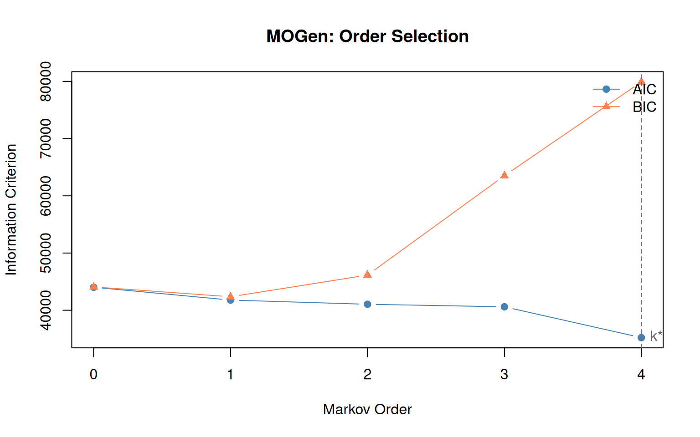
Interpreting the results
- Order 0: Actions are independent — no sequential structure.
- Order 1: The standard Markov model is sufficient.
- Order 2+: Higher-order dependencies exist. A first-order TNA would miss them.
Even when order 1 is globally optimal (by BIC), specific pathways may still exhibit higher-order behavior — the global model averages over all states. The HON analysis below detects these local patterns.
Second-order transition matrix
mogen_transitions() extracts the transitions at a given order, showing which two-step contexts lead to different outcomes:
mt <- mogen_transitions(mg, order = 2)
mt[1:8, ] path count probability from
1 Specify -> Command -> Specify 281 0.3914 Specify -> Command
2 Command -> Request -> Specify 228 0.7782 Command -> Request
3 Specify -> Command -> Request 198 0.2758 Specify -> Command
4 Request -> Specify -> Interrupt 187 0.3264 Request -> Specify
5 Command -> Command -> Command 163 0.3800 Command -> Command
6 Command -> Specify -> Interrupt 148 0.2792 Command -> Specify
7 Specify -> Request -> Specify 124 0.6526 Specify -> Request
8 Specify -> Refine -> Specify 122 0.6010 Specify -> Refine
to
1 Specify
2 Specify
3 Request
4 Interrupt
5 Command
6 Interrupt
7 Specify
8 SpecifyEach row is a second-order pathway: the from column shows the two-state context, to is the predicted next state, and probability is the conditional probability given that context.
Higher-Order Networks (HON)
While MOGen tells us whether higher-order dependencies exist on average, the Higher-Order Network (HON; Xu et al. 2016) tells us where. HON tests, for each state, whether adding context significantly changes the outgoing transition distribution using KL-divergence. If the distribution after Request → Specify differs from Frustrate → Specify, HON creates separate nodes for these contexts.
hon <- build_hon(net)
honHigher-Order Network (HON)
Nodes: 977 (9 first-order states)
Edges: 3733
Max order: 5 (requested 5)
Min freq: 1
Trajectories: 508
ho_edges <- hon$ho_edges[hon$ho_edges$from_order > 1, ]
ho_top <- ho_edges[order(-ho_edges$count), ]
ho_top[1:min(10, nrow(ho_top)), ] path from
2851 Specify -> Command -> Specify Specify -> Command
322 Command -> Request -> Specify Command -> Request
2850 Specify -> Command -> Request Specify -> Command
2720 Request -> Specify -> Interrupt Request -> Specify
2906 Specify -> Command -> Request -> Specify Specify -> Command -> Request
10 Command -> Command -> Command Command -> Command
379 Command -> Specify -> Interrupt Command -> Specify
352 Command -> Request -> Specify -> Interrupt Command -> Request -> Specify
2916 Specify -> Command -> Specify -> Interrupt Specify -> Command -> Specify
3253 Specify -> Request -> Specify Specify -> Request
to count probability from_order to_order
2851 Specify 281 0.3913649 2 3
322 Specify 228 0.7781570 2 3
2850 Request 198 0.2757660 2 3
2720 Interrupt 187 0.3263525 2 3
2906 Specify 180 0.9137056 3 3
10 Command 163 0.3799534 2 3
379 Interrupt 148 0.2792453 2 3
352 Interrupt 135 0.6192661 3 3
2916 Interrupt 124 0.4476534 3 3
3253 Specify 124 0.6526316 2 2Many of the total edges are higher-order — transitions where the preceding context changes the outcome. Look for pathways where the higher-order probability differs substantially from the first-order probability — these represent genuine contextual effects.
Raw path frequencies
The most common 3-step sequences regardless of statistical significance:
path_counts(net, k = 3, top = 15) path count proportion
1 Specify -> Command -> Specify 281 0.0288
2 Command -> Request -> Specify 228 0.0234
3 Specify -> Command -> Request 198 0.0203
4 Request -> Specify -> Interrupt 187 0.0192
5 Command -> Command -> Command 163 0.0167
6 Command -> Specify -> Interrupt 148 0.0152
7 Specify -> Request -> Specify 124 0.0127
8 Specify -> Refine -> Specify 122 0.0125
9 Specify -> Specify -> Specify 121 0.0124
10 Specify -> Interrupt -> Command 109 0.0112
11 Command -> Specify -> Command 106 0.0109
12 Request -> Specify -> Specify 94 0.0096
13 Specify -> Command -> Command 93 0.0095
14 Command -> Specify -> Specify 76 0.0078
15 Specify -> Specify -> Command 76 0.0078Path Anomaly Detection (HYPA)
HON detects where higher-order structure exists. HYPA (LaRock et al. 2020) takes a complementary approach: it detects which specific paths occur significantly more or less often than expected under a null model.
HYPA constructs a De Bruijn graph and computes expected path frequencies using a multi-hypergeometric null model. Paths that deviate significantly are flagged:
- Over-represented paths: These sequences occur far more often than chance predicts. They represent learned behavioral routines.
- Under-represented paths: Systematically avoided combinations — sequences that are socially inappropriate, cognitively difficult, or practically ineffective.
hypa <- build_hypa(net)
plot_simplicial(hypa, dismantled = TRUE)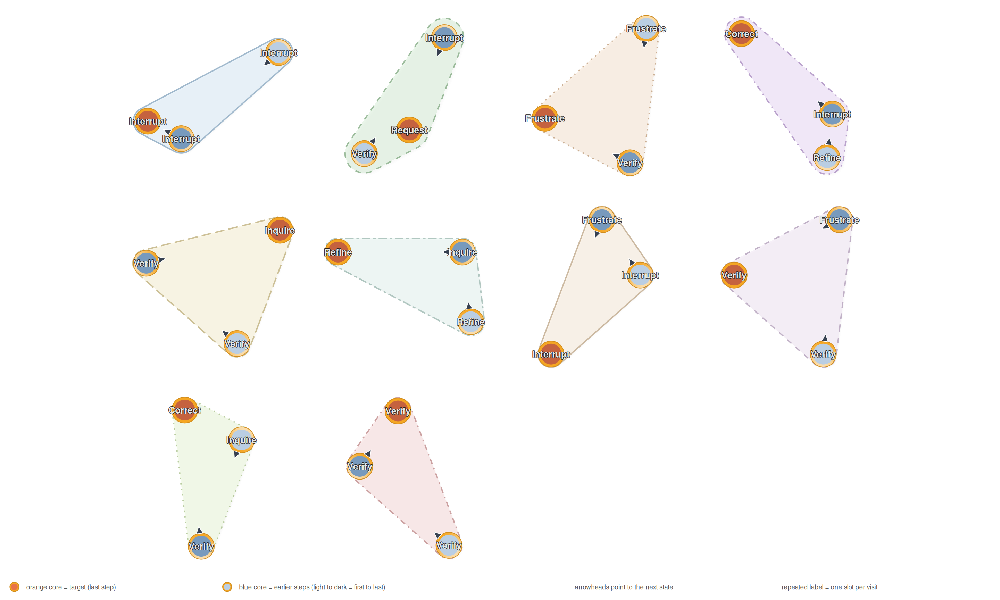
Over-represented pathways
Learned routines — sequences that occur far more than expected. plot_simplicial() accepts HYPA objects directly with the anomaly parameter to filter:
plot_simplicial(hypa, anomaly = "over", max_pathways = 9,
dismantled = TRUE, ncol = 3)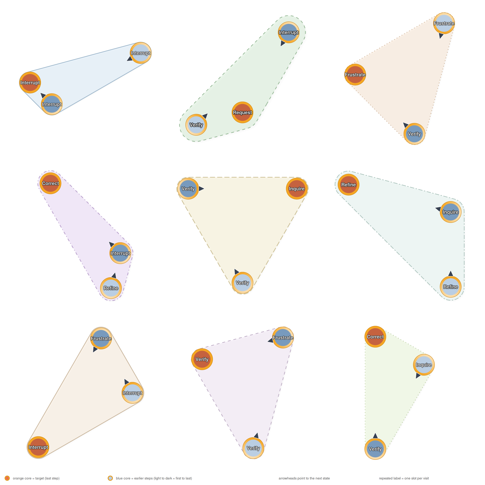
Under-represented pathways
Avoided sequences:
plot_simplicial(hypa, anomaly = "under", max_pathways = 6,
dismantled = TRUE, ncol = 3)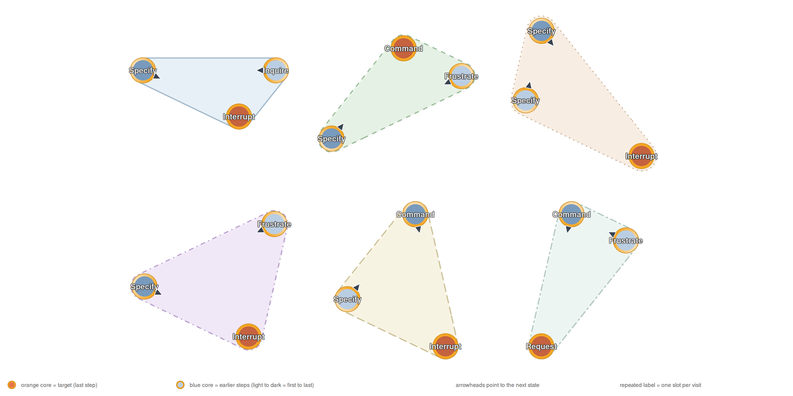
Combined overlay
Multiple pathways on a single plot — overlapping regions indicate states that participate in many higher-order patterns:
plot_simplicial(net, max_pathways = 6,
title = "Top 6 Higher-Order Pathways")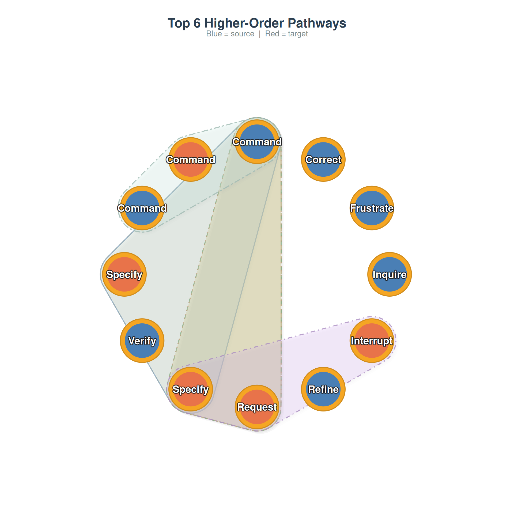
Higher-Order Analysis Across Groups
A powerful application is comparing higher-order structure across conditions. We build grouped networks by superclass (Directive, Evaluative, Metacognitive) and run HYPA on each:
grp_net <- build_network(human_long, method = "relative",
action = "code", actor = "session_id",
time = "timestamp", group = "cluster")
hypa_results <- lapply(names(grp_net), function(nm) {
h <- build_hypa(grp_net[[nm]])
data.frame(
group = nm,
total_edges = h$n_edges,
anomalous = h$n_anomalous,
over = h$n_over,
under = h$n_under,
pct_anomalous = round(100 * h$n_anomalous / h$n_edges, 1)
)
})
do.call(rbind, hypa_results) group total_edges anomalous over under pct_anomalous
1 Directive 27 22 11 11 81.5
2 Metacognitive 8 7 4 3 87.5
3 Evaluative 64 13 9 4 20.3Groups with a higher percentage of anomalous pathways have more higher-order structure — their sequential dynamics are less predictable from first-order transitions alone.
par(mfrow = c(1, 2))
plot_simplicial(grp_net$Directive, max_pathways = 4,
title = "Directive: Higher-Order Pathways")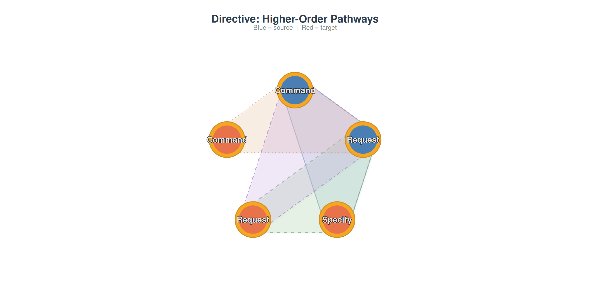
plot_simplicial(grp_net$Evaluative, max_pathways = 4,
title = "Evaluative: Higher-Order Pathways")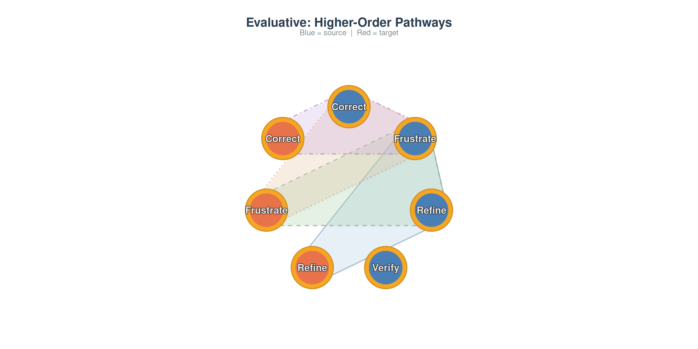
Comparing Datasets
Higher-order analysis is particularly informative when applied to different datasets. Here we compare the human-AI coding data with a collaborative regulation dataset:
data("group_regulation_long", package = "Nestimate")
net_reg <- build_network(group_regulation_long, method = "relative",
action = "Action", actor = "Actor")
hypa_coding <- build_hypa(net)
hypa_reg <- build_hypa(net_reg)
comparison <- data.frame(
dataset = c("Human-AI Coding", "Collaborative Regulation"),
nodes = c(net$n_nodes, net_reg$n_nodes),
total_paths = c(hypa_coding$n_edges, hypa_reg$n_edges),
anomalous = c(hypa_coding$n_anomalous, hypa_reg$n_anomalous),
over = c(hypa_coding$n_over, hypa_reg$n_over),
under = c(hypa_coding$n_under, hypa_reg$n_under)
)
comparison dataset nodes total_paths anomalous over under
1 Human-AI Coding 9 702 177 133 44
2 Collaborative Regulation 9 574 229 174 55
par(mfrow = c(1, 2))
plot_simplicial(net, max_pathways = 4,
title = "Human-AI Coding")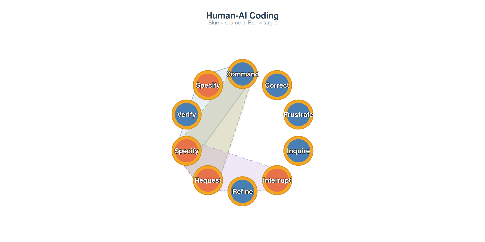
plot_simplicial(net_reg, max_pathways = 4,
title = "Collaborative Regulation")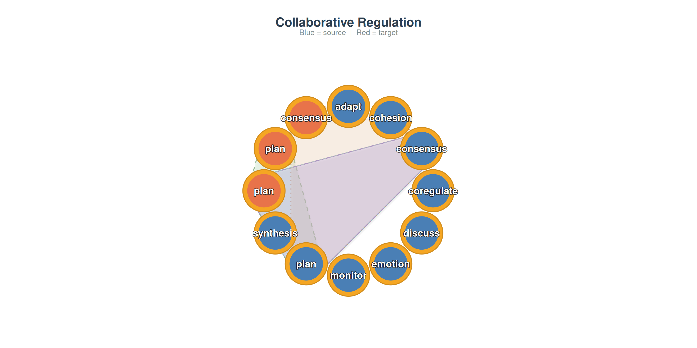
Different domains produce different higher-order signatures. Comparing these reveals whether sequential memory is a universal property of the behavioral system or specific to particular tasks.
Simplicial Complex Analysis
All the methods above analyze sequential pathways. Simplicial complex analysis takes a different perspective: it examines the topological structure of the network itself.
What is a simplicial complex?
A standard network captures pairwise relationships: node A connects to node B. But many interactions involve groups: states A, B, and C may all be densely interconnected, forming a triangle. A simplicial complex formalizes this:
- A 0-simplex is a single node
- A 1-simplex is an edge (two connected nodes)
- A 2-simplex is a filled triangle (three mutually connected nodes)
- A -simplex is a group of mutually connected nodes
The clique complex turns every clique into a simplex, lifting a flat graph into a multi-dimensional topological object.
Building the complex
sc <- build_simplicial(net, threshold = 0.05)
scClique Complex
9 nodes, 511 simplices, dimension 8
Density: 100.0% | Mean dim: 3.51 | Euler: 1
f-vector: (f0=9 f1=36 f2=84 f3=126 f4=126 f5=84 f6=36 f7=9 f8=1)
Betti: b0=1
Nodes: Command, Correct, Frustrate, Inquire, Interrupt, Refine, Request, Specify, Verify Topological descriptors
- f-vector : counts simplices at each dimension.
- Betti numbers : the central invariants. = connected components, = independent loops, = enclosed voids.
- Euler characteristic . For a contractible complex, .
- Simplicial degree: how many higher-dimensional simplices each node participates in.
node d0 d1 d2 d3 d4 d5 d6 d7 d8 total
1 Command 1 8 28 56 70 56 28 8 1 255
2 Correct 1 8 28 56 70 56 28 8 1 255
3 Frustrate 1 8 28 56 70 56 28 8 1 255
4 Inquire 1 8 28 56 70 56 28 8 1 255
5 Interrupt 1 8 28 56 70 56 28 8 1 255
6 Refine 1 8 28 56 70 56 28 8 1 255
7 Request 1 8 28 56 70 56 28 8 1 255
8 Specify 1 8 28 56 70 56 28 8 1 255
9 Verify 1 8 28 56 70 56 28 8 1 255
plot(sc)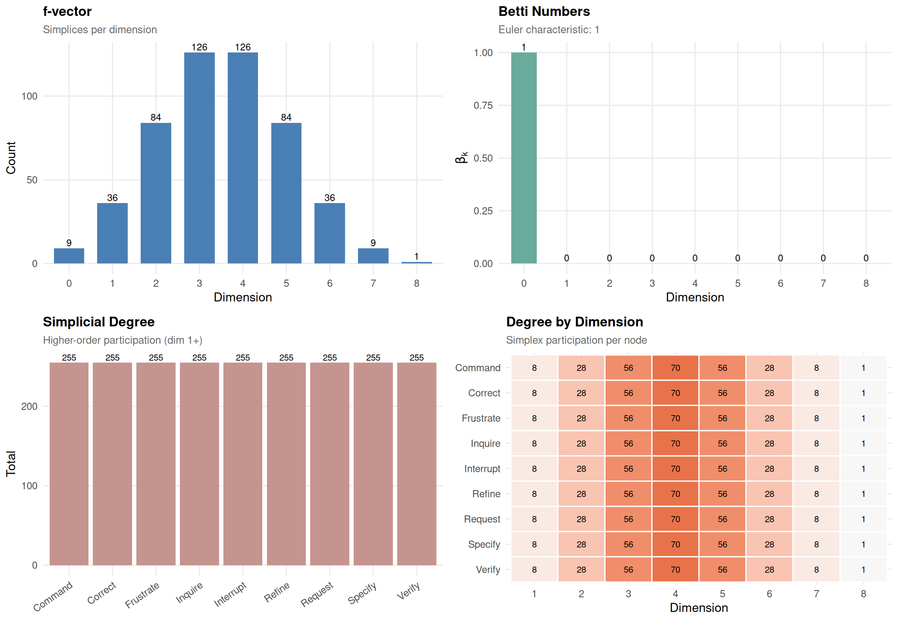
Nodes with high simplicial degree are topological hubs — they participate in many group interactions. This captures group-level importance that pairwise degree misses.
Persistent Homology
A single complex at one threshold gives a static snapshot. Persistent homology reveals how topology evolves as we vary the threshold. Start with only the strongest edges and progressively add weaker ones. Features that persist across a wide range are topologically robust.
ph <- persistent_homology(net, n_steps = 25)
phPersistent Homology
25 filtration steps [0.6197 → 0.0062]
Features: b0: 8 (1 persistent) | b1: 3 (0 persistent) | b3: 70 (70 persistent)
Longest-lived:
b0: 0.6197 → 0.0000 (life: 0.6197)
b0: 0.6197 → 0.1707 (life: 0.4491)
b0: 0.6197 → 0.1958 (life: 0.4239)
plot(ph)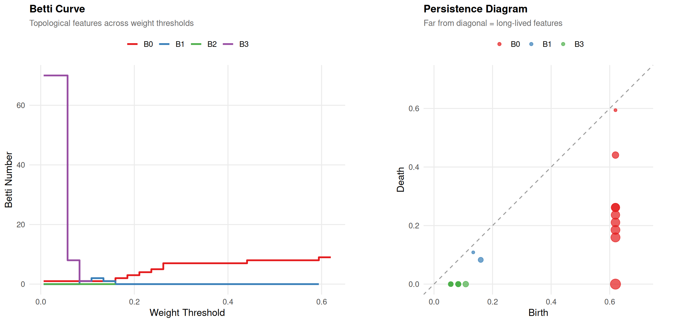
Betti curve (left): At high threshold, the network is sparse (many components). As threshold decreases, components merge ( drops) and loops may form ( rises) then get filled.
Persistence diagram (right): Points far from the diagonal have long lifetimes — structurally important features. Points near the diagonal are noise.
Q-Analysis
Q-analysis (Atkin 1974) measures connectivity at multiple levels of structural sharing. Two maximal simplices are q-connected if they share a face of dimension :
- q = 0: share at least one node
- q = 1: share at least one edge
- q = 2: share at least one triangle
qa <- q_analysis(sc)
qaQ-Analysis (max q = 8)
Components: q8:1 q7:1 q6:1 q5:1 q4:1 q3:1 q2:1 q1:1 q0:1
Fully connected at all q levels
Structure: Command:8 Correct:8 Frustrate:8 Inquire:8 Interrupt:8 Refine:8 Request:8 Specify:8 Verify:8
plot(qa)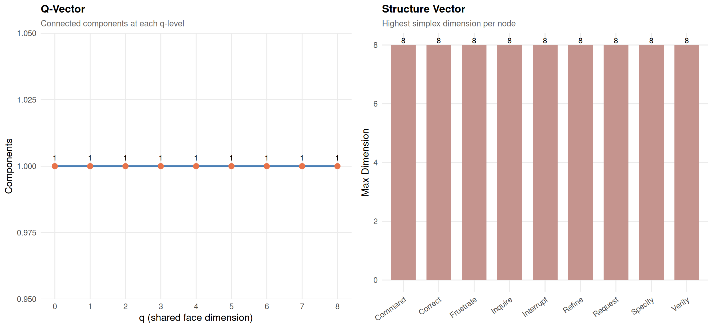
The fragmentation point (first q where components > 1) is critical. Below it, the network is fully connected through shared sub-structures. Above it, parts become structurally isolated.
Pathway Complex from HON
An alternative to the clique complex: build a simplicial complex from the pathways discovered by HON — topology derived from sequential dynamics rather than network structure:
sc_hon <- build_simplicial(hon, type = "pathway", max_pathways = 30)
sc_honPathway Complex
9 nodes, 31 simplices, dimension 3
Density: 12.2% | Mean dim: 1.00 | Euler: 1
f-vector: (f0=9 f1=14 f2=7 f3=1)
Betti: b0=2 b1=1
Nodes: Command, Correct, Frustrate, Inquire, Interrupt, Refine, Request, Specify, Verify
plot(sc_hon)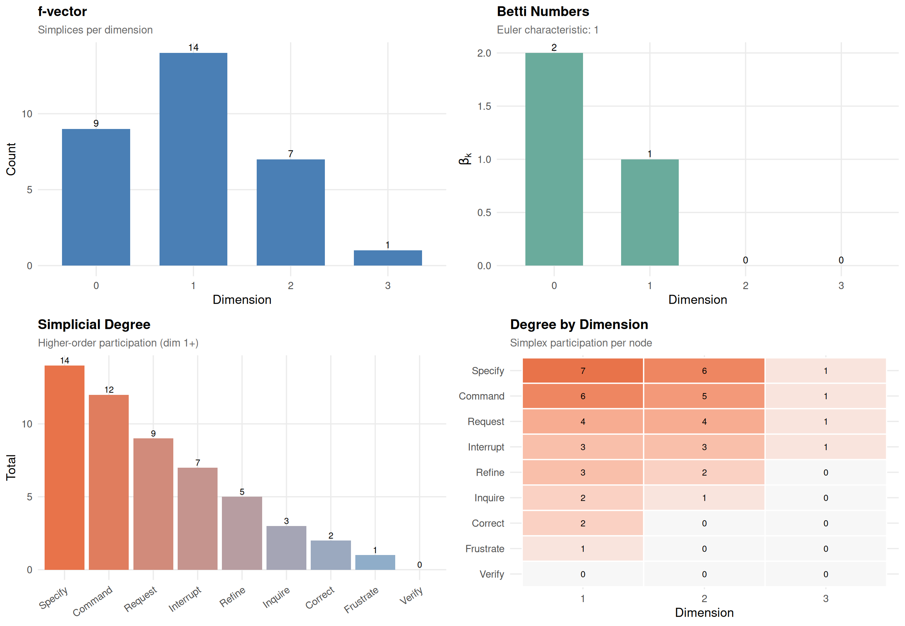
In the pathway complex, each higher-order pathway becomes a simplex. means some states are sequentially disconnected. means there are cyclic pathway structures.
Verification
All simplicial computations are cross-validated against igraph’s clique-finding and verified via the Euler-Poincaré theorem:
verify_simplicial(net$weights, threshold = 0.05) Cliques: MATCH (511 simplices)
Betti: b0=1 b1=0 b2=0 b3=0 b4=0 b5=0 b6=0 b7=0 b8=0
Euler: 1 (Euler-Poincare: VERIFIED)Summary
| Step | Method | Function | What it reveals |
|---|---|---|---|
| 1 | TNA | build_network() |
First-order transition structure |
| 2 | MOGen | build_mogen() |
Whether higher-order is needed |
| 3 | HON | build_hon() |
Where sequential context changes transitions |
| 4 | HYPA | build_hypa() |
Which paths are anomalously frequent or rare |
| 5 | Visualization | plot_simplicial() |
Blob diagrams of pathways |
| 6 | Simplicial | build_simplicial() |
Topological structure |
| 7 | Persistence | persistent_homology() |
Robustness across scales |
| 8 | Q-analysis | q_analysis() |
Multi-level connectivity |
The key progression:
- TNA answers: what transitions exist?
- MOGen answers: is first-order enough?
- HON answers: where does context matter?
- HYPA answers: which sequences are surprising?
- Simplicial analysis answers: what is the shape of the interaction space?
References
- Atkin, R. H. (1974). Mathematical Structure in Human Affairs. Heinemann Educational.
- Battiston, F., et al. (2020). Networks beyond pairwise interactions: Structure and dynamics. Physics Reports, 874, 1–92.
- LaRock, T., Scholtes, I., & Eliassi-Rad, T. (2020). HYPA: Efficient detection of path anomalies in time series data on networks. EPJ Data Science, 9(1), 15.
- Scholtes, I. (2017). When is a network a network? Multi-order graphical model selection in pathways and temporal networks. Proceedings of the 23rd ACM SIGKDD International Conference on Knowledge Discovery and Data Mining, 1037–1046.
- Xu, J., Wickramarathne, T. L., & Chawla, N. V. (2016). Representing higher-order dependencies in networks. Science Advances, 2(5), e1600028.